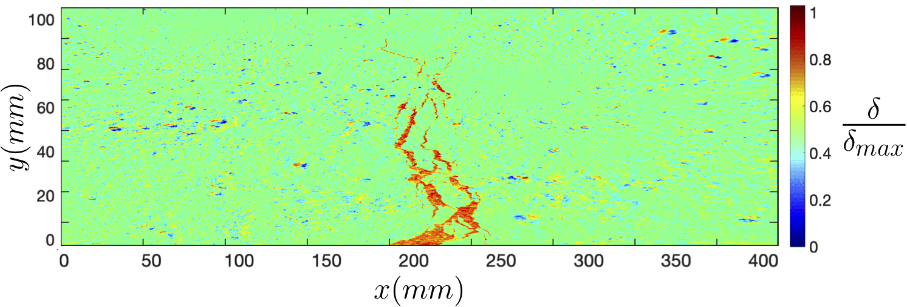

Asghar Aryanfar
 |
Assistant Professor Visiting Researcher Email: aryanfar@caltech.edu |
A funed PhD position as well as a funded MSc position is available in my group on the multiphysics modeling and experimental elecrochemistry of materials and methods for energy storage devices. For more information please contact me at aryanfar@caltech.edu.
Brief Bio
I am Assistant Professor of Mechanical Engineering at American University of Beirut (AUB) as well as Visiting Researcher at Caltech. My research mainly is on developing devices and multiphysics methods for energy related applications, including designing state-of-the-art high energy, safe and self-sustaining rechargeable batteries and predicting the corrosion/fracture of materials in extreme states. Here is more on my Background, Research, Publications and Teaching experiences as well as my Resume/CV.
New Preprint
|  | Asghar Aryanfar, Irem Şanal, Jaime Marian: Novel Percolation-based Measure for Fibre Efficacy in FRC Beams, 2019 [PDF] caption: Computing the area of the effective formed cracks and intensity map of the displacement field. |
{kind=link}
News
Oct’19: Talk at Electrochemical Society Conference (ECS), Atlanta, GA: Optimal Pulse Charging for the Dendritic Electrodeposition in Mesoscale Electrodes
Sep’19: Paper accepted in PHYSICAL REVIEW E: Finite Pulse Waves for Efficient Suppression of Mesoscale Dendrites in Rechargeable Batteries
Aug’19: Ayse Cetinler will join Politecnico di Milano as a graduate student in Civil Engineering.
Jul’19: Paper published in CORROSION SCIENCE (IF=6.4): Constriction percolation model for coupled diffusion-reaction corrosion of zirconium in PWR
May’19: Talk (sponsored) at American University of Beirut Mechanical Engineering.
Oct’18: Paper published at JOURNAL OF NUCLEAR MATERIALS (IF=2.6): Multilayer interface tracking model of zirconium clad oxidation
May’18: BAUBAP Grant awarded: Novel research on energy materials. (150k/2years)
Jan’18: Paper published at MRS ADVANCES: Theoretical pulse charge for the optimal inhibition of growing dendrites
Dec’17: KOSGEB and BIGG Grants awarded: Fabrication of novel safe battery of higher energy density. (300K/2years)
Aug’17: Talk (sponsored) at QUENCH workshop (IAEA), KIT, Karlsruhe, Germany: Novel percolation model in post-transition growth kinetics of heterogeneous zirconium oxide
Jan’17: Publication at PNAS is featured in Caltech news.
Jan’17: Paper published at PNAS (IF=9.6): Enhanced strength and temperature dependence of mechanical properties of Li at small scales and its implications for Li metal anodes
Aug’16: Paper published at CHEMICAL PHYSICS LETTERS (IF=1.9): Lithium batteries: Improving solid-electrolyte interphases via underpotential solvent electropolymerization
June’16: Talk at EMN Conference, Prague, Czech Republic.
May’16: Talk (sponsored) at EPFL Mechanical Engineering, Laussane, Switzerland. Engineering Electrochemical Materials for Energy Storage and Sustainability: From Rechargeable Batteries to Power Plants
Apr’16: Talk on International Congress on Advances in Nuclear Power Plants (ICAPP 2016), San Francisco, CA.
Mar’16: Talk (sponsored) at Tesla, Palo Alto, CA.
Mar’16: Paper published at JOURNAL OF METALS MATERIAS AND MINERALS (IF=2.3): Integrated Computational Modeling of Water Side Corrosion in Zirconium Metal Clad Under Nominal LWR Operating Conditions
Aug’16: Talk at Sadoway group, MIT, Cambridge, MA.
Nov’15: Two Talks (sponsored) at Apple, Cupertino, CA.
Oct’15: Interview on extending battery life via off-operation heating, American Institute of Physics. Link
Sep’15: Talk (sponsored) at Bilkent University Mechanical Engineering, Ankara, Turkey.
Aug’15: Paper published at JOURNAL OF CHEMICAL PHYSICS (IF=3.0): Annealing kinetics of electrodeposited lithium dendrites
May’15: Talk at Electrochemical Society Conference, Chicago, IL: Three Dimensional Modeling of Dendrite Growth in Rechargeable Lithium Metal Batteries
Feb’15: Paper published at PHYSICAL CHEMISTRY CHEMICAL PHYSICS (IF=3.6): Thermal relaxation of lithium dendrites
Dec’14: Talk at Bazant group, MIT, Cambridge, MA.
Aug’14: Paper published at PHYSICAL CHEMISTRY CHEMICAL PHYSICS (IF=3.6): Quantifying the dependence of dead lithium losses on the cycling period in lithium metal batteries
Jun’14: Talk (sponsored) at Intel Corporation, Hillsboro, OR.
May’14: Talk at Electrochemical Society (ECS) Conference, Orlando, FL: Investigation of Lithium Dendrite Necking and Formation of Dead Lithium Crystals
Apr’14: Talk at Materials Research Society (MRS) Conference, San Francisco, CA.
Mar’14: Paper published at JOURNAL OF PHYSICAL CHEMISTRY LETTERS (IF= 8.7): Dynamics of Lithium Dendrite Growth and Inhibition: Pulse Charging Experiments and Monte Carlo Calculations
Jan’14: Paper published at ENVIRONMENTAL SCIENCE & TECHNOLOGY (IF = 7.2): Effects of Anodic Potential and Chloride Ion on Overall Reactivity in Electrochemical Reactors Designed for Solar-Powered Wastewater Treatment
Dec’13: Talk at Materials Research Society (MRS) Conference, Boston, MA: Lithium Dendrite Growth Control Using Local Temperature Variation
May’13: CNN Interview, featured design in SolidWorks, novel closed-loop sanitation system.
Oct’12: Talk at Electrochemical Society Meeting (ECS), Honolulu, Hawaii: Modeling of State-Dependent Dendritic Growth Batteries with Potentiostatic Cycling
Aug’12: First prize recipient, Novel self-sustaining sanitation system, Bill and Melinda Gates Foundation: [FastCompany] [Reuters] [Time] [Economist]
Honors/Awards

May’09: Top 2%, Undergraduate class, Sharif University of Technology, Tehran, Iran.
Jul’08: 6/15000+, National civil engineering olympiad, Iran.
Jun’04: 78/500000+ , National college entrance exam, Iran.
May’04: 1/500000+ , National private colleges entrance exam, Iran. (exempted from military service)